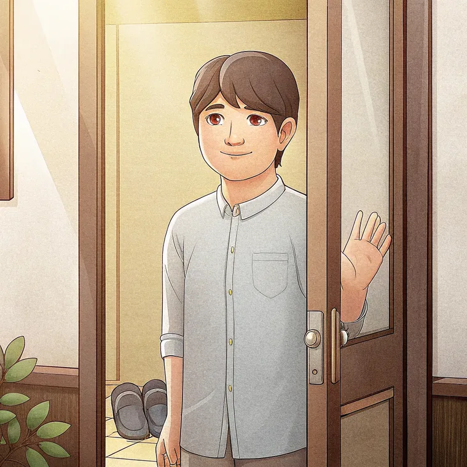
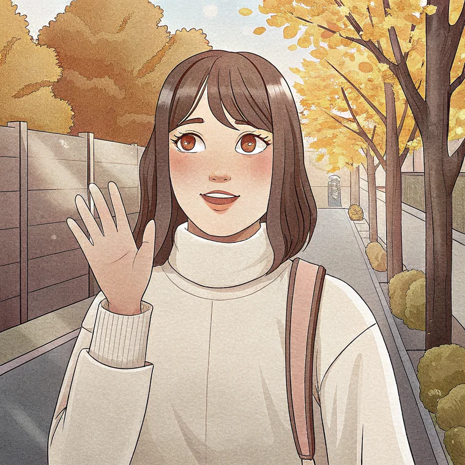
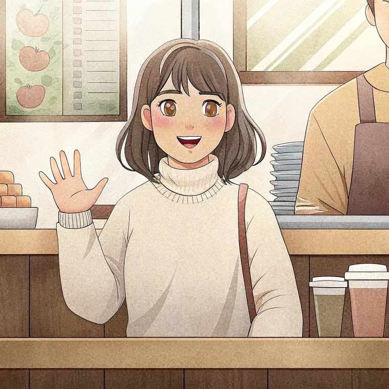

한국어
Des leçons claires, des histoires illustrées et de vraies voix coréennes. Du tout premier caractère jusqu'au niveau B2.



Les premières histoires se lisent avec trente mots. Les dernières sont du vrai coréen contemporain. Chacune existe en bande dessinée, en texte suivi et en podcast.
Les 2 767 enregistrements du site sont lus par des personnes, jamais par une machine. C'est la règle depuis le premier jour.
Un seul fil à suivre, dans l'ordre : 257 étapes du hangeul au B2. Le reste ne s'impose jamais, on y va le jour où une question se pose.
257 étapes qui s'enchaînent toutes seules : leçon, exercice, jeu, puis l'histoire qui s'ouvre.
CommencerFrançais ⇄ coréen, avec la conjugaison automatique, les irréguliers et la prononciation lue à la française.
OuvrirChaque syllabe se construit sous tes yeux, et l'outil explique pourquoi certains sons changent.
Écrire mon prénomÉcoute et lecture, chronométrées, avec un mode examen sans indice ni correction avant la fin.
Passer le testLe tableau du hangeul, les mnémotechniques, les exercices de lecture et le clavier coréen.
Voir les fiches71 articles sur la langue, la culture, la cuisine et le voyage, du kimchi aux particules de politesse.
Lire le blog42
histoires illustrées
257
étapes, du hangeul au B2
2 767
enregistrements réels
0 €
pour tout le parcours
Korean Stories est né d'un constat simple : il n'existait pas de parcours coréen structuré, gratuit et pensé pour les francophones, du tout premier caractère jusqu'à regarder un K-drama sans sous-titres.
Chaque histoire, chaque leçon et chaque exercice est écrit et vérifié à la main, pour coller au coréen réellement parlé aujourd'hui. Le Premium optionnel finance le site ; il ne verrouille aucune leçon.
Stella
Vingt minutes par jour, et l'alphabet coréen est à toi. Commence par la première leçon.
Commencer le parcoursGratuit, sans carte bancaire, sans publicité.